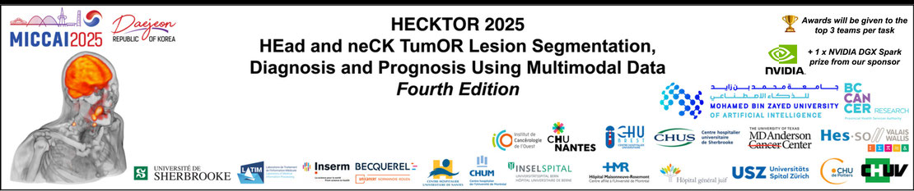

The International Conference on Medical Imaging Computing and Computer Aided Intervention (MICCAI 2025) was held in Daejeon, South Korea. The Intelligent Medical Computing Laboratory of the School of Applied Sciences at the Macao Polytechnic University performed outstandingly at this conference, with a total of 16 high-level papers published at the conference. It also won the championship in the highly anticipated "HECKTOR 2025" International Head and Neck Tumor Imaging Analysis Challenge, demonstrating the leading position of the Macao Polytechnic University in the field of medical artificial intelligence.

MICCAI is an authoritative academic conference in the field of medical imaging computing and computer-aided intervention worldwide, known for its strict evaluation criteria and fierce competition, and has significant academic influence internationally. At the important competition "HECKTOR 2025" held during the conference, the Intelligent Medical Computing Laboratory team of Macao Polytechnic University stood out from numerous international top teams and won the championship with innovative technology and outstanding scientific research strength.
In addition, the Intelligent Medical Computing Laboratory of Macao Polytechnic University, in cooperation with the Netherlands Cancer Institute and other internationally renowned institutions, jointly organized the MICCAI 2025 official seminar "Deep Breath 2025: The Second Workshop on Artificial Intelligence and Imaging Deep Learning of breast cancer Diagnosis and Treatment Challenges". The laboratory also took the lead in hosting one of the important competitions: the "Universal Ultrasound Challenge: Multi Organ Classification and Cutting" (UUSIC25) international challenge. This challenge is committed to promoting the development of universal ultrasound analysis models, attracting widespread participation from researchers worldwide with its innovative multi task evaluation mechanism and emphasis on clinical practicality.
The School of Applied Sciences at the Macao Polytechnic University is committed to promoting innovative development in the field of medical artificial intelligence. Its research achievements have significant international influence and contribute to the application and development of artificial intelligence technology in precision medicine through research publications, participation in international competitions, and hosting international seminars and competitions.